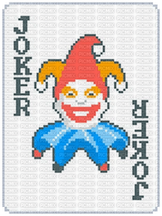
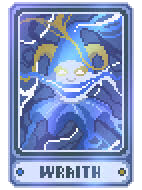
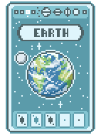
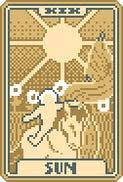
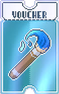

Balatro é um jogo de criação e baralho roguelike inspirado no pôquer, cujo objetivo é criar sinergias poderosas e ganhar muito.
Combine mãos de pôquer válidas com cartas curinga exclusivas para criar sinergias e construções variadas.
Ganhe fichas suficientes para vencer blinds tortuosos, ao mesmo tempo em que descobre mãos e baralhos bônus ocultos à medida que avança.
No jogo, além das cartas tradicionais, existem categorias especiais que influenciam diretamente a estratégia e a pontuação durante a partida, cada uma com funções únicas.





Curinga Espectral Planetária Tarot Cupons